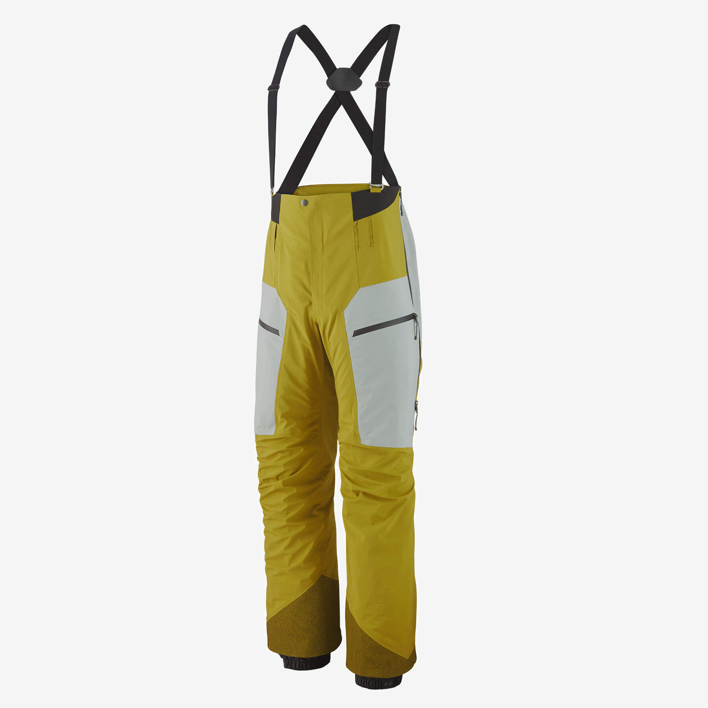

Women's Storm Shift Jacket
특유의 안감 사용으로 보온성과 땀 흡수력을 높였기에, 어떠한 날씨에도 상관없이 지속되는 방풍기능과 편안함을 느낄 수 있습니다.
607,200원

Men's Storm Shift Jacket
개선된 핏과 깔끔한 스타일에 기능성까지 더해져, 라이더의 자연스러운 움직임까지 보강해줍니다.
607,200원

Men's Untracked Bibs
PFC-free, 100% 리사이클 3레이어 고어텍스 원단에 리사이클 솔루션 다이 플란넬 안감을 본딩 처리하였습니다.
71,200원
Men's Untracked Jacket
언트랙트 재킷은 백컨트리 프리라이더를 위한 상급 레벨의 스노우 제품으로 아무리 혹독한 날씨에도 한결같이 비바람으로부터 몸을 보호해줍니다.
872,000원
Kids' Storm Shift Jacket
어린이들을 위한 가장 고기능성의 2레이어 쉘 원단으로 겹쳐입기 좋고, 고강도 활동인 스키나 스노우보드복으로 적합합니다.
367,200원
Men's Super Free Alpine Jacket
어린이들을 위한 가장 고기능성의 2레이어 쉘 원단으로 겹쳐입기 좋고, 고강도 활동인 스키나 스노우보드복으로 적합합니다.
719,200원